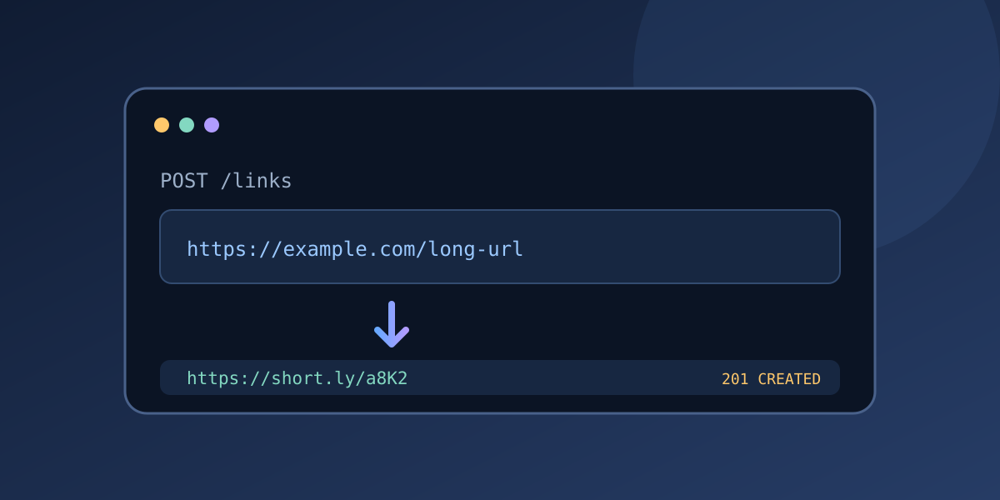
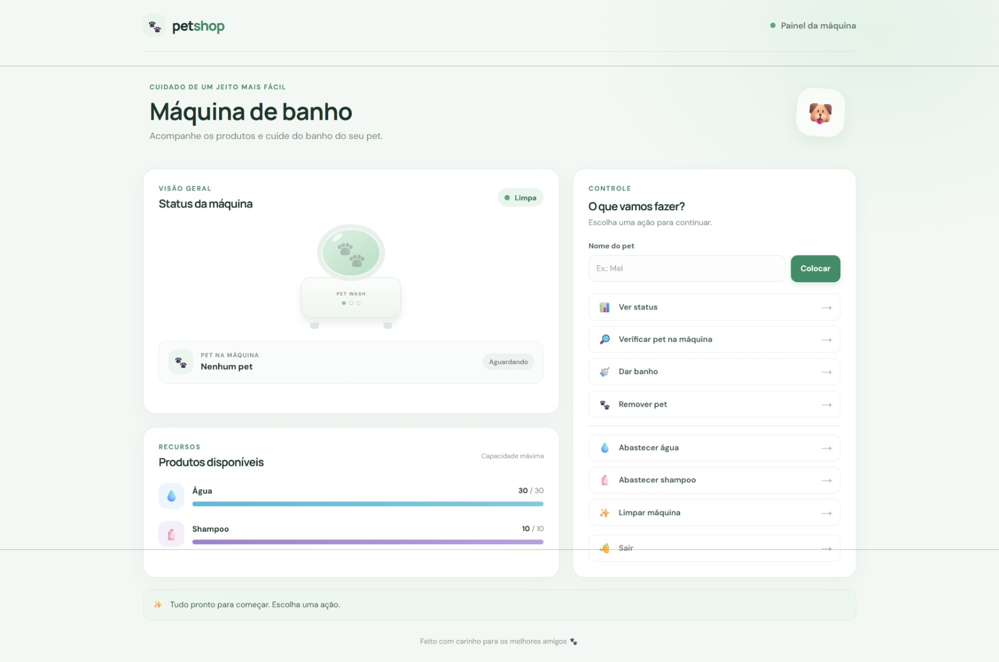
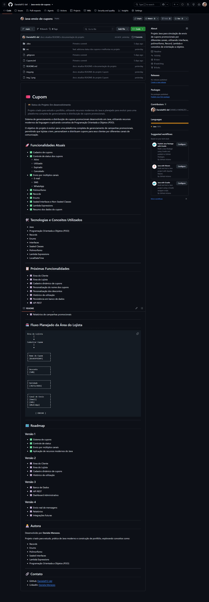
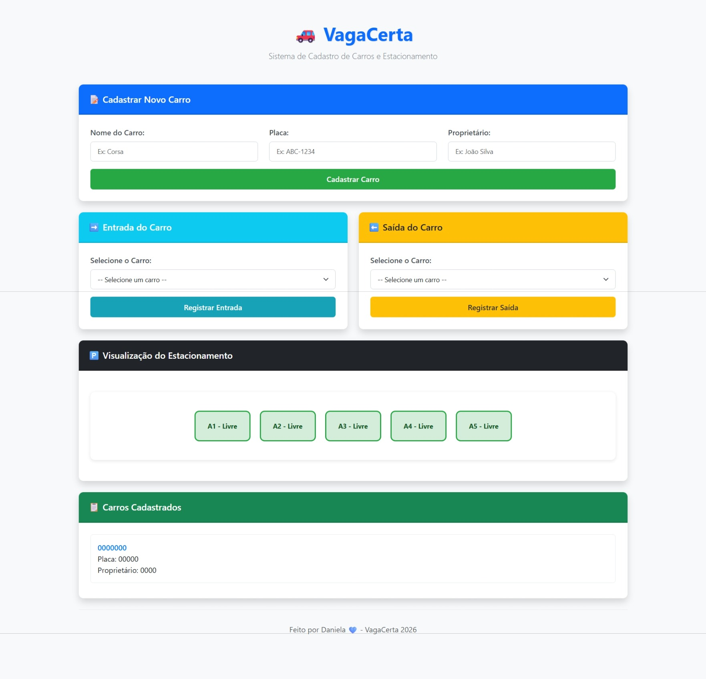
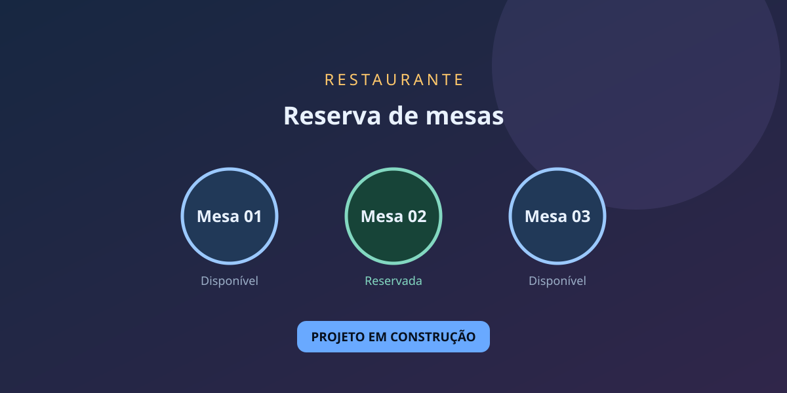
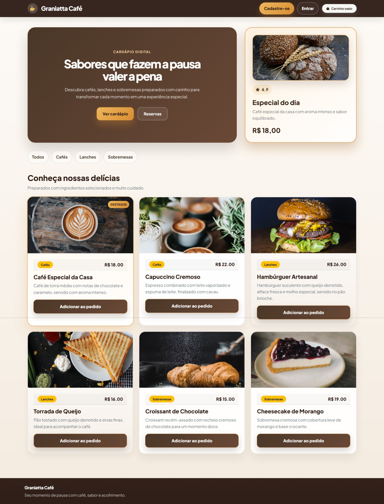

Back-end e lógica
Node.js, TypeScript, APIs REST e programação orientada a objetos.

Sou formada em Análise e Desenvolvimento de Sistemas, proativa e colaborativa. Gosto de criar soluções e aprender com novos desafios em tecnologia.
Minha formação inclui fundamentos de análise de requisitos, modelagem de sistemas, SQL, APIs REST, testes e desenvolvimento web.
Minha experiência como técnica de enfermagem fortaleceu minha responsabilidade, agilidade e capacidade de trabalhar em equipe. Estou construindo minha trajetória em tecnologia por meio dos estudos e de projetos práticos.
Conhecimentos e ferramentas que utilizo ou estou estudando.
Node.js, TypeScript, APIs REST e programação orientada a objetos.
Java e Oracle Database.
JavaScript e bibliotecas para desenvolvimento web.
HTML5, CSS, Sass e Bootstrap.
SQL, Microsoft Power BI e criação de dashboards.
WordPress e suporte técnico.
Utilizo ferramentas de IA, como ChatGPT e GitHub Copilot, como apoio aos estudos, à pesquisa e ao desenvolvimento dos meus projetos.
Comunicação, trabalho em equipe e resolução de problemas.
Uma seleção de projetos práticos em back-end, Java e desenvolvimento web.

API REST para criar links curtos, listar registros, redirecionar para as URLs originais e excluir links.

Simulação em Java de uma máquina de banho para pets, acompanhada por uma demonstração web interativa e responsiva.

Simulação de envio de cupons por diferentes canais, explorando interfaces, polimorfismo, records e expressões lambda.

Aplicação web para cadastrar veículos, controlar entradas e saídas e acompanhar em tempo real a ocupação das vagas.
Aplicação Java para venda de ingressos nas modalidades inteira, meia-entrada e familiar, com regras de desconto e conceitos de orientação a objetos.

Projeto Java para simular reservas de mesas em restaurantes, aplicando coleções, estruturas condicionais e laços de repetição.
Aplicação que simula o cadastro de usuários em uma newsletter, com visualização e exclusão dos endereços de e-mail cadastrados.

Landing page responsiva para um café, com destaque para o especial do dia, apresentação de lanches e bebidas e uma proposta visual moderna.

Site institucional responsivo para uma casa de repouso, com navegação suave, componentes interativos e foco na experiência em dispositivos móveis.

Aplicação de cadastro responsiva com validação de campos, envio de dados por e-mail e páginas de sucesso e erro.

Site institucional responsivo para um escritório de advocacia, com apresentação de serviços, áreas de atuação, equipe, contato e implementação de cookies.
Anhanguera Educacional. Formação com fundamentos de análise de requisitos, UML, POO, estruturas de dados, desenvolvimento web, back-end, Java e SQL.
Formação realizada pela DIO em parceria com a Randstad, com foco em atendimento, suporte técnico e resolução de problemas em tecnologia.
Trabalho freelancer realizado por meio da plataforma 99Freelas, com manutenção e atualização de uma loja virtual em WordPress.
Estou disponível para conversar sobre oportunidades e projetos na área de tecnologia.